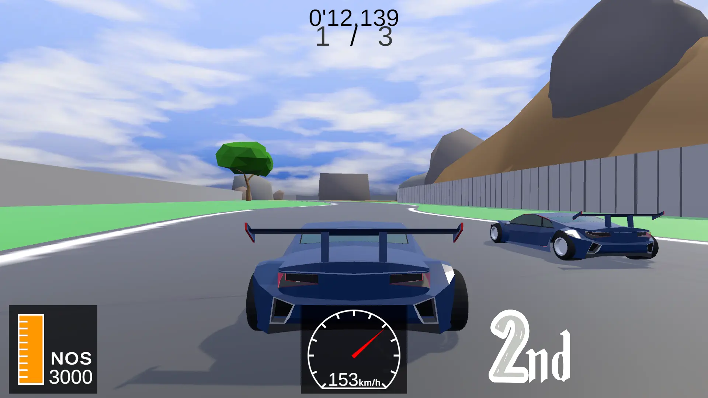
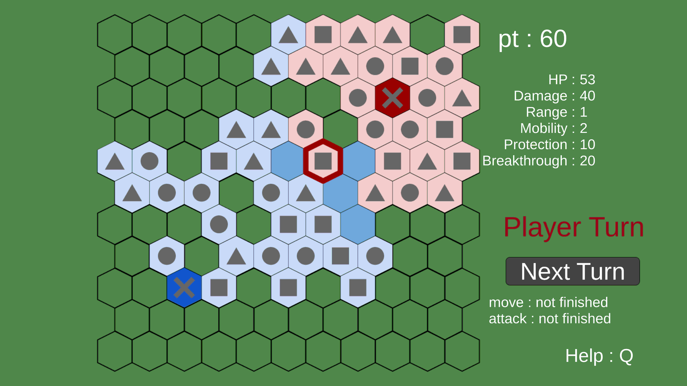
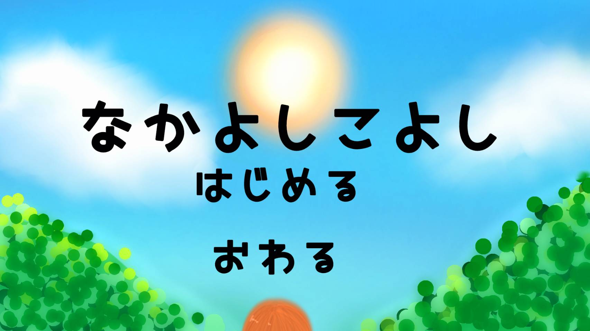

物研ゲーム集
北野高校物理研究部が制作したゲームの一覧です。
- レーシングゲーム

- レーシングカーを操作してコンピューターと競争できるゲーム。
- 138期が制作し、2024年度六稜祭にて展示した。Blenderで車体やコース・背景など3Dオブジェクトをモデリングし、Unityを用いて制作した。
- PC推奨
- レーシングゲームをプレイ
- ストラテジーゲーム

- 兵士を操作してコンピューターと対戦し、先に敵の城を破壊した方が勝利というルールのゲーム。
- 138期が制作し、2024年度六稜祭にて展示した。制作を通して、プログラミング未経験の部員がC#やUnityの練習を行った。
- PC・モバイル対応、横画面のみ
- ストラテジーゲームをプレイ
- なかよしこよし

- なつやすみ前のある日、悩める少女「あの」はたった1匹の虫をきっかけに何とも不思議な経験をする。それは彼女にとって幸運か、はたまた不運か。全てはあなたの選択次第。マルチエンディングのノベルゲームです。
- 139期が初めて製作した作品。
- PC・モバイル対応
- なかよしこよしをプレイ